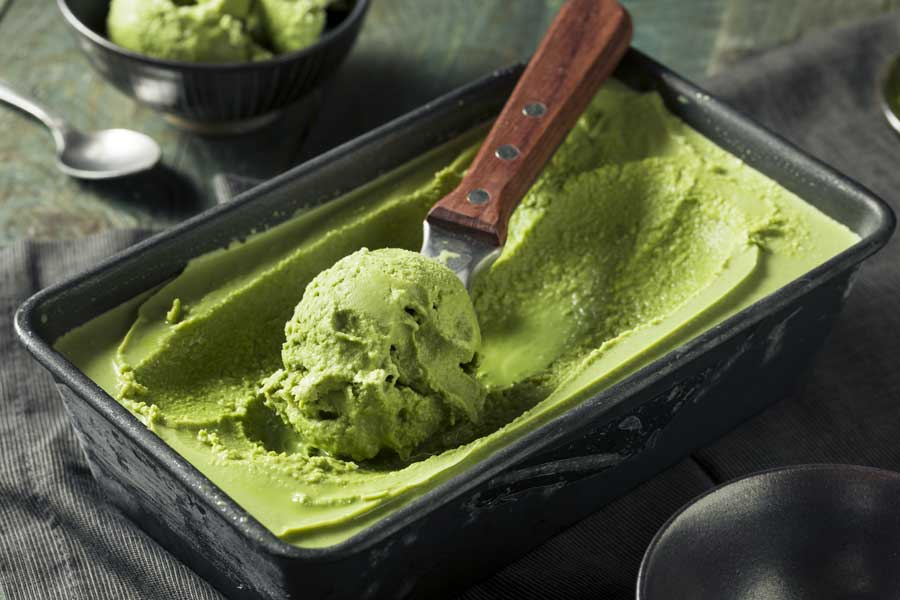

Matcha Icecream recipe

Description
Matcha ice cream itself isn’t something new, especially in Asia. But nothing compares to the authentic version. Westernized versions are often creamier and sweet. The traditional version is still sweet but has a strong matcha flavour that gives it a slightly bitter taste.
Ingredients
- 2 cups half-and-half (10-12% fat)
- 3 tbsp matcha powder
- ½ cup sugar
- ⅛ tsp sea salt
Steps
- Freeze the ice cream bowl from your machine or a large metal bowl or pan for 24 hours before starting. This will help the ice cream freeze better. Also, prepare a large bowl in an ice bath.
- In a medium-sized pan, combine the half-and-half, sugar and salt over medium heat. Whisk everything together.
- Once everything is combined, use a fine-mesh strained and sift the matcha into the mixture. Continue to whisk everything together and cook until the matcha and sugar are well combined. When small bubbles form at the edge of the mixture, remove the pan from the heat. Make sure to not let the mixture boil! Reduce to medium-low heat if you need to.
- Then, transfer the mixture to the bowl in the ice bath. Once the mixture is cool, cover it with plastic wrap and put it in the refrigerator for at least 3 hours.
- If you are using an ice cream maker, transfer the chilled mixture to the bowl you froze the day before. If not, transfer it to the regular frozen metal bowl or pan you prepared.
- Follow the instructions for your ice cream maker and then transfer the soft ice into an airtight container. Freeze for at least 4 hours before serving.